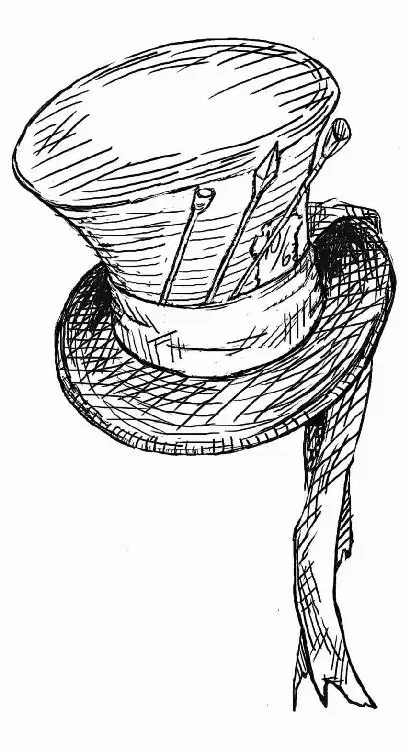

Alice hung on tight as the Mad Hatter sauntered through the Tulgey Woods at a jaunty pace. Low branches brushed by right over her head and sunlight trickled through the green leaves. It was surprisingly peaceful, considering she’d nearly been eaten by a Bandersnatch and taken prisoner by a Knave not very long ago.
The Hatter was muttering something, but even the words she could make out sounded like nonsense:
Twas brillig, and the slithy toves
Did gyre and gimble in the wabe;
All mimsy were the borogroves,
And the mome raths outgrabe.
He warbled, like a child reciting a poem he’d memorized in school.
Alice carefully climbed down the hat and perched on his shoulder. “What was that?” she asked.
“What was what?” the Hatter asked. Then he continued:
The Jabberwock with eyes of flame.
The jaws that bite.
The claws that catch.
Beware of the Jabberwock, my son,
and the Frumious Bandersnatch.
He took his Vorpal Sword in hand.
The Vorpal Sword blade went snicker-snack
He left it dead, and with its head,
He went galumphing back.
“It’s all about you, you know?” he finished.
Alice thought it was high time she put this mad idea to rest. “I’m not slaying anything,” she said firmly. “I don’t slay. So put it out of your mind.”
The Hatter stopped in his tracks. “Mmm … mind,” he said, plucking her off his shoulder. He dropped her onto a log and kept walking. Astonished, Alice followed him. With her new tiny size, she had to run to keep up.
“Wait!” she called. “You can’t leave me here!” At this size, she was reasonably afraid that a hawk might eat her. Or perhaps a very hungry squirrel. If they even had squirrels here … She hadn’t seen any normal animals yet. The squirrels were probably ten feet tall and blue with dainty white gloves.
The Mad Hatter whirled around and stared at her. “You don’t slay… . Do you have any idea what the Red Queen has done?” His voice became highpitched, mimicking her. “You don’t slay.”
She spread her hands. It wasn’t fair for him to mock her. “I couldn’t if I wanted to,” she protested. Where would a nice Victorian girl have learned how to slay things? She couldn’t even kill the spiders and caterpillars that found their way into the house.
The Hatter put his hands on his hips. His gaze was accusing. “You’re not the same as you were before,” he said. “You were much more … muchier … you’ve lost your muchness,” he finished, nodding as if that made perfect sense.
“My muchness?”
He crouched and poked her in the stomach with his finger. “In there,” he said. “Something’s missing.”
The Hatter stood up and walked away again. Alice frowned thoughtfully. What did he mean? How would he know if she was missing something? And … was she? After a moment, she ran after him.
“Tell me what the Red Queen has done,” she called. He stopped.
“It’s not a pretty story.”
“Tell me anyway,” she insisted.
He scooped her up and plunked her back on his shoulder. They started forward again, although now Alice realized that the trees around them were changing. Instead of smooth brown trunks and fluttering green leaves, the foliage here was blackened and twisted, branches horribly charred like fingers clutching at the darkening sky.
The Hatter pushed through a thicket of branches, and they came out into a place where the earth was scorched and barren in a wide circle around them. He blinked, his eyes tearing up. His voice was hoarse with emotion as he began to tell the tale.
“It was here. I was Hatter to the Queen at the time. The Hightopp clan have always been employed at court.”
His eyes stared blankly at the blackened place as he drifted back in his memory to the Horunvendush Day. His whole clan had been there—all the Hightopps, adults and children, festive in their shiny new top hats. He could remember them all cheering for the White Queen and her court as they rode in on gleaming white horses. Her long white robe flew out behind her as her horse trotted in the lead. Beside her rode the March Hare, the Cheshire Cat, and the White Rabbit, among others … all of them members of her court. And standing in the center of the clearing, holding the shining Vorpal Sword, was the White Knight, the one they had all come to see.
He remembered the sudden feeling of terror that brushed against all their hearts as enormous leathery wings blocked out the sun. The woods went dark around them. All the upturned faces were filled with awe and horror. They had never seen such a beast.
The White Knight—their hero, their champion, the one who was supposed to fight for them against all horrors—gaped at the terrifying creature, dropped the Vorpal Sword, and fled into the trees.
It took only a moment for panic to seep through the crowd. If the Knight was too afraid to fight, then there was no one to defend them all from the Jabberwocky. Screams broke out as everyone ran for his life, pushing and trampling anyone in the way. Fire streaming from the Jabberwocky’s mouth blazed over their heads.
The Queen’s horse reared, and the Queen lost her crown. The Hatter ran forward to grab the reins, losing his hat in the process. He led her to safety, but for one moment he looked back.
He saw one last thing before they escaped: the Knave of Hearts picked up the fallen sword and lifted it victoriously. With a howl, the Jabberwocky retreated, leaving carnage and disaster behind him … and only one surviving member of the once sprawling Hightopp family.
The Hatter had returned to the scene later. His face was contorted with shock and horror as he crouched, touching the still-smoldering earth where his entire clan had died. Only one burned and trampled hat remained. The Hatter picked it up, brushed the soot off, and placed the wrecked hat firmly upon his head.
Alice watched him as he told his story. Her heart ached for him. Now she could understand his madness, and she couldn’t help but pity him. She looked up at the scorched hat he still wore, then to his tormented face. He twitched, driven to the edge of his madness by guilt, helpless rage, and deep loss.
“Hatter?” Alice said. She remembered how the Dormouse handled these moments. “Hatter!” she shouted.
He jerked, pulling himself back from the abyss. “I’m fine,” he said quickly.
“Are you?” Alice asked.
Instead of answering, the Hatter whipped his head around toward the dark trees that surrounded them. “Did you hear that?” he said softly. “I’m certain I heard something.”
Alice strained her ears to hear what he had. “What?” she asked nervously.
He whipped around in the other direction. “Ooh. Red Knights!” he cried.
The bloodhound’s chilling bay echoed through the woods. The Hatter slipped Alice into his waistcoat pocket and began to run. She clung to the brocade fabric with all her might as the world jolted and bumped around her. It was dusk now, and the lowering darkness made all the shadows seem extraterrifying.
The Hatter dodged trees and leaped over stumps, running flat out. He could see the edge of the woods ahead. But just before he reached it, a flash of red caught his eye from the right. He veered to run away, and a Red Knight stepped out in front of him. Quick as a wink, the Hatter spun in the other direction. But another Red Knight was there, waiting.
They were trapped.
